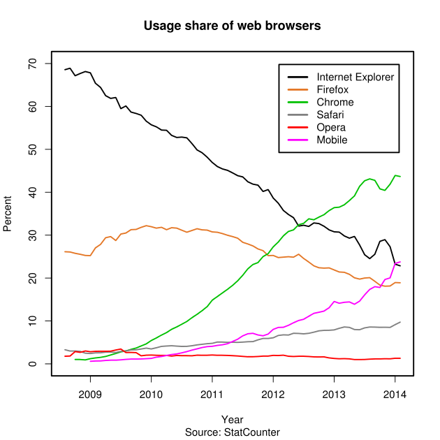

Tech 101
#GDIA2T101
Welcome!
Girl Develop It is here to empower and assist women interested in getting into and advancing in the tech industry through affordable and accessible programs.
Some "rules"
- We are here for you!
- Every question is important.
- Help each other.
- Have fun!
Upcoming Events
Intro To Responsive Web Design
A Workshop
Tues. 10/14 @ Atomic Object
6pm - 9pm | 206 S. 5th Ave
Upcoming Events
Code & Coffee
Saturday 10/18 @ Amer's
10am - 1pm | 312 S. State St.
Upcoming Events
Intro To Agile
FREE Workshop
Tues. 10/21 @ Pillar
6:30pm - 8:30pm | 1327 Jones Dr.
Community Events
- GDI Detroit - Intro to HTML & CSS
Saturday 10/11 @ AO Detroit - SEM.js - Browserify
Monday 10/13 @ Barracuda - WordPress A2 - Work Session
Wednesday 10/15 @ Arbor Brewing - GDI Detroit - Designing a User Friendly Website
Saturday 10/18 @ Detroit Public Library - A2 Pyladies - Easy Functional Python
Sunday 10/19 @ Atomic Object - GDI Detroit - Intro to WordPress
Monday 10/20 @ AO Detroit
- Ignite UX Michigan
Tuesday 10/21 @ Conor O'Neill's - GDI Detroit - Concrete5
Wednesday 10/22 @ AO Detroit - Duo Tech Talks - DARPA's Cyber Analytic Framework
Thursday 10/23 @ Duo Security - A2 Ruby Brigade - An Overview of Ruby Modules
Tuesday 10/28 @ Atomic Object - Xamarin A2 - Programming iOS
Thursday 10/30 @ WCC - Mobile Monday - Automotive and Mobile
Monday 11/3 @ Ann Arbor SPARK
Plus soooo many more we couldn't fit here...
Sponsors!

Tech 101
#GDIA2T101
About Us
-
Ronda Bergman
- GDI-AA Co-Leader, Software Engineer @Terumo
- Experience: 15 years .Net
-
Vera Reynolds
- Software Journeyman @Pillar
- Experience: 2 years Java
What We'll Cover
-
Terms & Technologies
ACRONYMS! oh my! -
How the web works
Servers, and clients, and networks! -
Building a web site
Languages, considerations, UX & IA, tools -
Web development careers
Team structure, becoming a developer
What to Expect
- This is a survey of a very broad topic
- Get a sense of what you'd like to know more about
- I don't know everything, and neither will you
- Have fun! (and ask questions!!)
What Does a Web Page
Actually Look Like?
A typical web page is composed of a combination of:
- HTML
- CSS
- JavaScript
Web Page Terms
HTML: Hyper Text Markup Language
A language used to create the structural code of a webpage.
ie. paragraphs, headers, links, sidebars, etc.
CSS: Cascading Style Sheets
A language used to style the structural elements of a webpage.
JavaScript: (NOT Java)
A language used to create dynamic and interactive features of a webpage.
Development Terms
Text Editor
A program for creating / editing plain text files.
IE. Sublime Text, Text Mate, Notepad, Vim, Emacs
IDE: Integrated Development Environment
Software meant to support the entire development process.
IE. text editing, automation, debugging, compilation, etc.
CMS: Content Management System
An application that allows management of site content from a central interface.
IE. WordPress, Joomla, Drupal, Concrete5
WYSIWYG: What You See Is What You Get
A visual markup editor intended for those who don't know how to code.
Like Microsoft Word, but for the web. Often used in CMSs.
Networking Terms
IP Address: Internet Protocol Address
A unique address for a computer or a server on a network.
IE. 199.195.116.179 == gdiannarbor.com, 127.0.0.1 == localhost
Domain Name
A unique name that identifies an internet resource, like a website.
IE. gdiannarbor.com, google.com
DNS: Domain Name Service
A directory that ties domain names to IPs, allowing connection to websites via URLs.
URL: Uniform Resource Locator
A unique character string that refers to a specific resource on the web.
IE. http://gdiannarbor.com/events.html
Web / Hosting Server
A computer system that holds website code and processes requests from the web.
"Buzz" Terms
SEO: Search Engine Optimization
The process of increasing your web site's perceived value to search engine
algorithms, thereby raising its rank in search results
API: Application Programming Interface
A set of programming instructions for accessing a web-based application.
Twitter, Facebook, Google Maps, Meetup
The Cloud
Services and technology that offer remote storage,
processing, or other functionality by way of the internet.
Open Source
A code that is free for anyone to use or modify. Contributions are encouraged.
Perl, jQuery, Bootstrap, Font Awesome
How does the web work?

Loading a Web Page
- Enter a URL into your browser's address bar.
- DNS connects you to the hosting server.
- The server processes the request and sends back the webpage resources for your computer to display.
- Your browser puts all the resources together to render the webpage.That's it.
Clients vs. Servers
Clients make requests. Servers fulfill them.
Client is most-often a browser
search engine crawlers, command line interfaces,
and other applications can also behave as clients.
Server is a computer
And the collection of software it contains.
Typically, larger and more powerful that PCs.
Languages & Tools
for Development
Client-Side vs. Server-Side Tools
Client-Side
- HTML
- CSS
- JavaScript
- Flash
- Images*
Sever-Side
- PHP
- Perl
- Python
- Ruby
- .Net
- Java
- ColdFusion
- Sass
- CoffeeScript
- JavaScript (Node.js)
- Databases*
Other Non-Languages
-
Libraries are collections of prewritten, reusable functions that you can call.
jQuery, Three.js, & Compass (Sass) -
Frameworks provide a defined structure for you to insert and run your code within.
Rails, Cake, Angular.js -
AJAX is a technique involving multiple languages that makes it possible to return results from a server without needing a page refresh.
Stands for: Asynchronous JavaScript And XML
Java != JavaScript
Java
- Server-Side
- Requires special parser (JVM)
- Object-oriented
- By Sun Microsystems
JavaScript
- Client-Side (primarily)
- Parsed by any browser
- Procedural (primarily)
- By Netscape
Building a Web Site
Considerations Before Building
- What is the purpose of the site?
- Who is your audience?
- How / Who will build / design / test / support / etc.?
-
What's the domain name and where will you host it?
- Domain >= $10 per year
- Hosting >= $60 per year
Information Architecture & User Experience
Information Architecture (IA) is the process of organizing and labelling website content in an intuitive, accessible way.
User Experience (UX) is examining how users feel when interacting with an interface.
Benefits
- Deepen engagement
- Increase conversion
- Raise satisfaction
- Bring users back
Sitemaps & Decision Trees


Responsive Web Design
The practice of building a single website that
works across all devices and screen sizes.
Provide an optimal and intuitive experience for all users.
Ex. bostonglobe.com
Three Compontents
- Fluid Layout
- Fluid Media
- Media Queries
Occasionally, entire features will be toggled on / off for the display.
Web Standards
Developing in a way that is consistent with current development methodologies and in a way that will ensure the highest level of browser compatibility and performance.
- Valid HTML, CSS, and JavaScript syntax
- Accessibility Requirements / Enhancements
Content for screenreaders, colors for the colorblind. - Uses semantic formats and technologies
Structure and identify data. Help create a "Web of Data." - Valid meta data
Page title, page description (for search engines). - Proper character encoding
Choosing a Language
Which Language Should I Use?
It depends...
- HTML and CSS will be used on virtually all web facing pages.
- JavaScript may be used for interactivity on web facing pages, or for programming logic on the server-side.
- Server-Side languages may be used for data access and programming logic.
Server-Side Languages
What are the Differences?
-
Syntax
The alphabet, language, and grammar of programming language. - Strengths & Weaknesses
- Philosophies
Server-Side Languages
Which Should I Choose?
- What are you already familiar with?
- What do you want to learn?
- What does your hosting server support?
- How active is the community and how thorough the documentation?
Hello, World!
PHP
echo "Hello, world!";
Java
class HelloWorld {
static public void main( String args[] ) {
System.out.println( "Hello World!" );
}
}
Hello, World!
Python
'Hello, world!'
Ruby
puts 'Hello, world!'
Hello, World!
JavaScript
console.log('Hello, World!');
Developer Tools
Tools of the Trade
- Text Editor
SublimeText, Notepad++, Vim, Atom
(All of those are FREE!) - Browser
Chrome, Firefox, or Safari.
(The more you have to test with, the better.) - Google
StackOverflow, MDN, GitHub, Documentation.
(Seriously. Google ALL THE THINGS.)
Tools of the Trade - Browsers
Other Tools of the Trade
- Version Control
Keep a backup history of all your code changes.
Git, Subversion, CVS - FTP: File Transfer Protocol | SSH | SCP
Get your files on a server
WinSCP, Cyberduck, CoffeeCup FTP - Image Editor
Maybe. Depends on the complexity and design of your site.
Gimp, Photoshop
Web Development Careers
Meet the Web Team
-
Content & Marketing
Copywriters, SEO Strategists, Content Strategists -
Design
UX Designers, Web Designers, Graphics Designers -
Development
Front End Developers, Back End Developers, Server Admins, Database Admins -
Management & QA
Project Manager, QA Engineers
How to Become a Developer
- Degrees and Certifications
They don't hurt, but you can get by without them. - Curiosity
Make mistakes. Be a problem solver. Be intrepid. - Build things
A lot of things. For yourself, for friends. Build a portfolio. - Learn
And learn some more. Don't stop there, keep learning. - Network
Go to tech meetups, conferences, and workshops. Meet your people.
Want to learn more?
Join the community.
- Meetup Groups
- Hackathons
- Conferences
- Code & Coffees
Tech 101
#GDIA2T101
Questions?